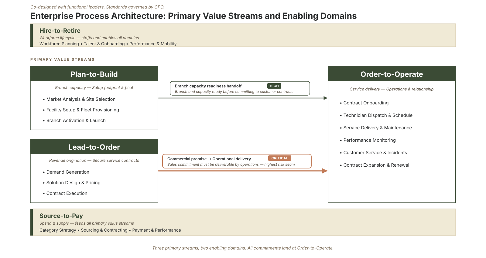

In 1997 I was a release manager at Bell Atlantic (now Verizon). Every release manager built plans their own way, in their own spreadsheet or a Word document, hand-calculating clock times row by row for every step. Things got missed, and each release manager learned which things the hard way.
I designed a locked-formula Excel template: enter a task and a duration, and it produced every start time, stop time and go/no-go milestone, with a required backout strategy at every go/no-go. Resourcing per release fell 40%, annual releases tripled from 665 to over 2,000 with no added headcount, and availability held above 99.90%.
The template didn't run anyone's release. Each release manager still ran their own. What it governed was how every plan was built and where every go/no-go sat. I led that team for less than two years, and after I left the template stayed in use: twenty years later, Verizon was still using one patterned after it. It was a tiny scope next to standing up and running a GPO function, but it is the kind of thing a Global Process Owner owns.
When people hear "Global Process Owner," they often picture a big team, a big budget and authority over how a slice of the company runs. A GPO built on that picture tends to get resented and routed around. Let's define the role.
Authority
What stays with the functional leaders
A Global Process Owner does not own the people, the budget, or the execution of a domain. At Meridian Field Services, the branch managers still run the branches, the sales leaders still close the deals, and the procurement team still cuts the purchase orders. None of that moves under the GPO.
What the GPO owns is narrower and harder: the standards, the handoffs, and the performance measures that govern how work flows through a domain from end to end.
The GPO owns the architecture, and the functional leaders own the execution. When a process owner starts trying to run the work instead of governing how it flows, the function gets resented and quietly routed around. Holding that boundary is most of the job.
Structure
Domains are value chains
People also tend to treat the five domains as departments. Each one is a value chain that cuts sideways across the org chart.
Take Lead-to-Order at Meridian. It runs through marketing (the lead), sales (the qualification), a solutions engineer (the technical scope), finance (the pricing), and legal (the contract) before it hands off to operations. No single department owns it, which is why it needs a process owner: someone accountable for the full chain.
An org chart is vertical, and value flows horizontally. The GPO's job is to see and govern the horizontal flow the chart was never designed to show.
Methodology
You have to decompose it to see it
We can't govern a value chain we can't see in detail, so the first work is decomposition: breaking each domain down from the full chain (L0, the forest) into its major activities (L1) and then into the sub-processes where the work happens (L2 and below, the trees).
I've walked through the method step by step in the How to See the Forest and the Trees series, so I won't repeat the mechanics here. What decomposition gives us is a shared map. For Meridian's Plan-to-Build domain, that map runs from site selection and feasibility, through design standards and permitting, into construction oversight, and out through commissioning and the turnover to operations. Each of those is an L1 activity with its own sub-processes, its own handoffs, and its own places where value leaks.
Until that map exists, five people talking about "our process" are picturing five different things. The map is what makes the domain governable.

Process Taxonomy: Decomposing enterprise value chains (L0) into discrete activities (L1) and sub-processes (L2) to establish clear ownership boundaries.
Adoption
Why the boundary protects the function
Every process function has to design against one failure: becoming a standards body that functional leaders comply with on paper and ignore in practice.
The boundary (owning the architecture and leaving the execution with the functional leaders) guards against it, because it forces the function to earn its authority. When we don't command the work, our standards get adopted only if they're useful: faster, clearer and less painful than what people were doing before. That keeps the function honest.
The GPO's currency is speed, credibility and proof of value, and Part 5 covers the operating principles behind them.
Taxonomy
The five domains are one example
A caution about the five domains themselves (Plan-to-Build, Lead-to-Order, Order-to-Operate, Source-to-Pay, and Hire-to-Retire): for a company like Meridian, that taxonomy fits well. For yours, it might not, and that's fine. They are one example of an end-to-end taxonomy. Here is the Meridian view, briefly, so the shape is concrete:
- Plan-to-Build is the capacity engine: opening branches and standing up service capability. It holds the largest capital and the largest unmanaged risk.
- Lead-to-Order is revenue origination: how a prospect becomes a signed, priced, deliverable contract.
- Order-to-Operate is delivery and lifecycle service, the domain most directly tied to customer experience and retention.
- Source-to-Pay is everything from category strategy through procurement to payment, spanning both big equipment buys and high-frequency operational supply.
- Hire-to-Retire is the workforce lifecycle, which at a skilled-trades company is a competitive constraint.
The exercise for any company is the same: identify the handful of end-to-end value chains the business runs on, and resist the urge to make them match the org chart.
Tooling
A note on building it to last
When I decompose a domain, a static diagram is out of date the day after it's drawn, so I want the result structured: every activity, every handoff and every measure captured as data, so the model keeps up as the business changes. That's what Forester, the tool I'm building alongside this series, is for, and it's why decomposition, for me, is the start of instrumentation. More on that as the series goes on.
In your organization, what's a process that everyone owns a piece of, and so no one owns end to end? Those value chains are where a process function earns its keep. Which one came to mind for you?
Next in the series: Part 3: The Seams Are Where Value Leaks, on the handoffs between domains, where the value nobody is looking for goes missing.
Meridian Field Services is a fictional composite. The approach draws on my own research into Process Excellence and Global Process Ownership, assisted by AI research tools, and on my work at Bell Atlantic and Verizon: the release management template (1997-1998).